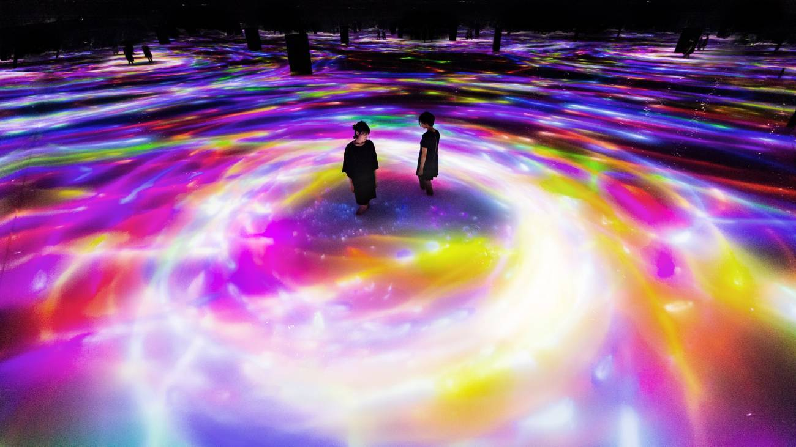
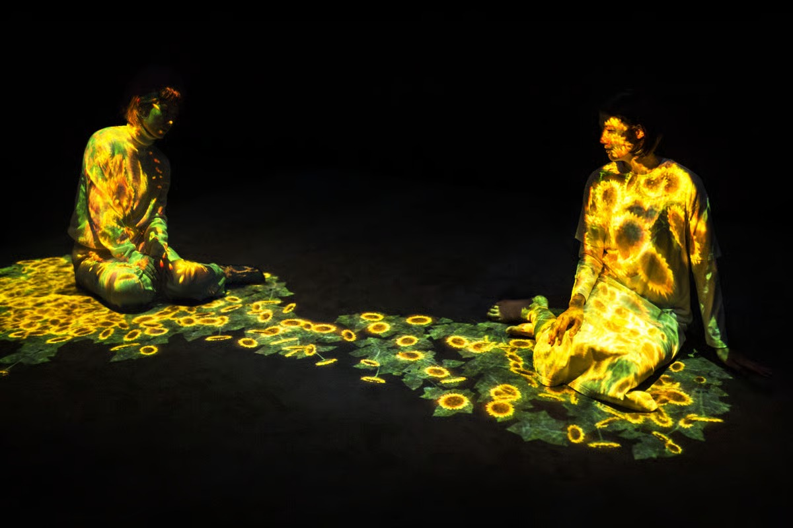
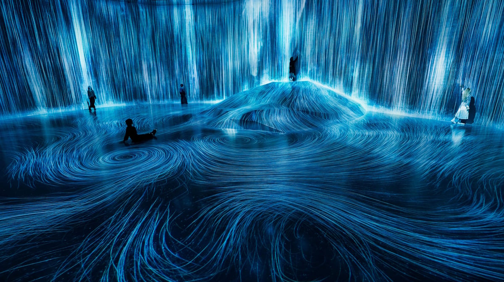

Crear mundos digitales en constante transformación
La metodología de trabajo de teamLab se basa en la colaboración entre especialistas de distintas áreas. Artistas, ingenieros, programadores y diseñadores trabajan conjuntamente para desarrollar sistemas capaces de generar imágenes, sonidos y comportamientos dinámicos que responden al entorno y a la interacción humana.
Las obras son concebidas como ecosistemas digitales donde cada elemento influye sobre los demás. Los movimientos de los visitantes pueden alterar la apariencia de una instalación, modificar trayectorias visuales o provocar nuevas animaciones, creando experiencias únicas e irrepetibles para cada persona.
Obras y conceptos clave
Borderless
Museo de arte digital inmersivo donde las obras se mueven por los espacios y se conectan entre sí, creando una experiencia interactiva.

Planets
Exposición inmersiva en la que los visitantes recorren salas con agua, luces y proyecciones digitales, participando físicamente en las obras.

Flowers and People
Instalación digital en la que flores nacen, crecen y desaparecen según la presencia y movimiento de las personas.

Universe of Water Particles
Instalación que representa una cascada mediante partículas digitales simuladas, reaccionando a la interacción del público.

Arte inmersivo
Busca envolver al visitante mediante imágenes, sonidos, luces y espacios interactivos, haciéndolo parte de la experiencia.
Interactividad digital
Característica de las obras de teamLab que permite que el público influya o modifique la experiencia artística mediante movimientos, gestos o acciones.